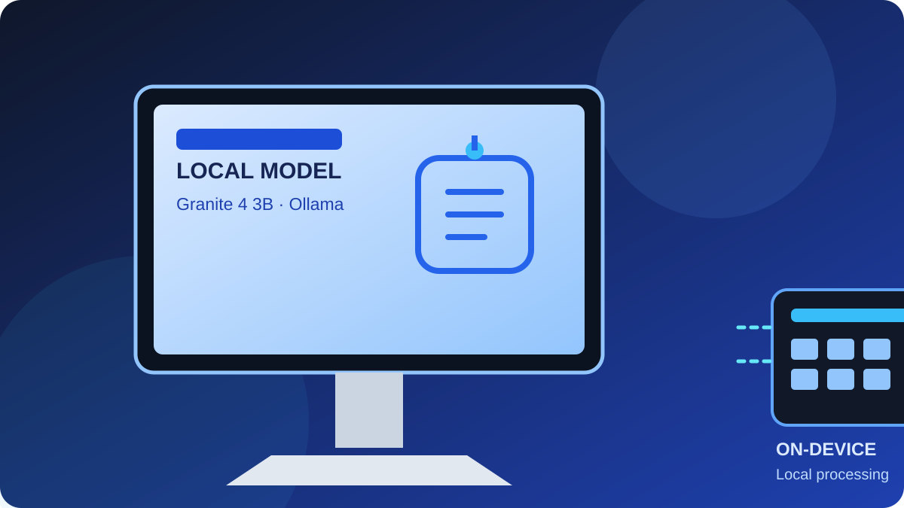

Project overview
I spent time testing whether a small language model running locally could reliably help with AWS Solutions Architect Associate (SAA-C03) practice questions. The experiment used Granite 4 3B through Ollama on my own computer, rather than relying entirely on a hosted model.
The goal was to explore what a local model could do, understand its limits, and learn how to connect it to an existing automation agent. It was a learning and engineering exercise, not a claim that the model can guarantee correct exam answers.
What I worked through
1. Run locally
Installed and tested Granite 4 3B through Ollama, then checked that a local prompt could produce a captured response.
2. Test the limits
Evaluated the idea of using a local model for AWS exam practice. Its accuracy was not consistent enough to trust as an answer key.
3. Troubleshoot Hermes
Worked through several issues trying to connect the model directly into Hermes. The direct integration route was more difficult than expected.
4. Build a practical script
A Python script eventually provided a working way to run the local test and capture the output for reporting.
5. Report scheduled jobs
Connected the reporting workflow with Hermes cron-job monitoring and AgentMail delivery to a private email inbox.
Hermes daily cron report
The useful outcome was broader than the LLM test itself. The reporting workflow is intended to summarise which scheduled Hermes jobs ran during the day and identify successful runs and failures, so problems are easier to spot without manually checking every job.
What are Ollama, Granite and Hermes?
Ollama is the local model runner used in this experiment. It makes it possible to download and run compatible language models on a personal computer and send them prompts through a local interface. It is the tool running the model, rather than the model itself. Running locally can reduce dependence on a hosted AI service, but performance depends on the model, available memory and hardware.
Granite 4 3B is the language model tested here. “3B” refers to roughly three billion parameters. It was small enough to try locally and was useful for basic prompt handling, structured output and some reasoning tasks. Hermes is the automation agent in this setup: it runs scheduled jobs (cron), coordinates tools and produces reports. AgentMail was used to deliver the daily report to my private inbox.
Models tested: what worked and what did not
I compared several small models through Ollama against AWS Solutions Architect Associate (SAA-C03)-style tasks. These were practical experiments, not a statistically rigorous benchmark or an official exam score. The same broad lesson kept appearing: a response can sound confident and still contain a technical error.
| Model | What I observed | Assessment for AWS practice |
|---|---|---|
| MiniCPM-V 4.7 1B | Repeated parts of the prompt and exposed awkward raw reasoning markers such as </think>. Its VPC explanations were clumsy and did not consistently explain the networking path clearly. | Not reliable enough Output quality and clarity needed too much checking. |
| Qwen3 1.7B | Could complete some simple checks, including returning the expected DAILY REPORT READY marker and some route-selection reasoning. But some AWS practice questions were flawed, and structured JSON output became corrupted. | Mixed results Useful for simple experiments, but not dependable for generating or grading exam questions unattended. |
| Granite 4 3B | Produced the expected structured-output marker and handled some route-selection reasoning. However, a VPC question had ambiguous options and an incorrect NAT detail; a traffic-path explanation misstated source/destination translation; and an RDS question introduced Aurora Global Database even though the correct choice was B. | Best practical fit tested, with caveats Promising for controlled local tasks and reports, but still needs verification for AWS technical answers. |
Examples of the AWS-answer problems
VPC and NAT
Granite's VPC response included an incorrect NAT detail and the answer options were not cleanly distinguishable. That matters because AWS questions often test exactly which subnet initiates traffic and how a route table directs it.
Traffic flow
In a route/path question, the model was mostly on the right track but described source and destination address translation inaccurately. A nearly correct networking explanation can still teach the wrong mental model.
RDS architecture
In an RDS question, Granite introduced Aurora Global Database even though that was not the correct answer (the expected choice was B). Adding a plausible AWS service does not make a response correct.
Question and JSON quality
Qwen3 1.7B sometimes generated flawed AWS questions and corrupted JSON, while MiniCPM-V 4.7 1B repeated prompt content and exposed raw reasoning markers. Those failures made automation and dependable marking difficult.
What Granite was useful for
- Local inference: run prompts on the computer through Ollama, rather than depending on a remote model for every test.
- Structured responses: it passed a simple expected-output check used during the reporting tests.
- Basic reasoning: some route-selection and workflow tasks were handled reasonably, which made it worth investigating further.
- Automation experiments: the local run could be wrapped in a Python script so output could be captured and included in a repeatable workflow.
Granite is not an AWS-specific expert model, and a small model does not automatically know the latest service behaviour or interpret every exam scenario correctly. Its useful role here was as a local component for bounded tasks and experimentation—not as an authoritative answer key.
From model testing to an operational report
After spending many hours trying to connect the local model directly with Hermes, I switched to a simpler Python-script approach. That was the turning point: instead of making the whole workflow depend on a fragile direct integration, the script ran the local test and captured the result. The Hermes reporting workflow could then focus on summarising the day's scheduled jobs.
The email report is useful because it gives me a daily view of which Hermes cron jobs ran and which failed, rather than leaving me to inspect each job manually. The model experiment and the cron-monitoring workflow are related, but they are separate responsibilities: the local LLM is tested locally, while Hermes handles scheduled automation and reporting.
What this demonstrates
- Running and testing a local LLM using Ollama.
- Evaluating model output instead of assuming it is correct.
- Python scripting to make a repeatable local test and report.
- Troubleshooting integration boundaries between tools.
- Connecting scheduled automation results to email reporting.
This project reflects a practical approach to learning: try the integration, investigate what fails, simplify the workflow, and keep the working result useful and honest.